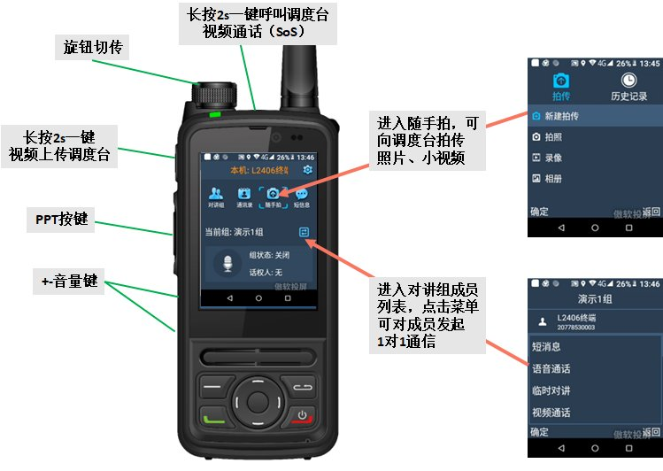
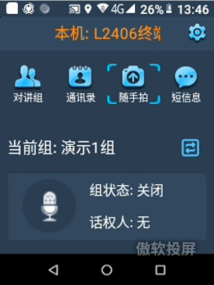
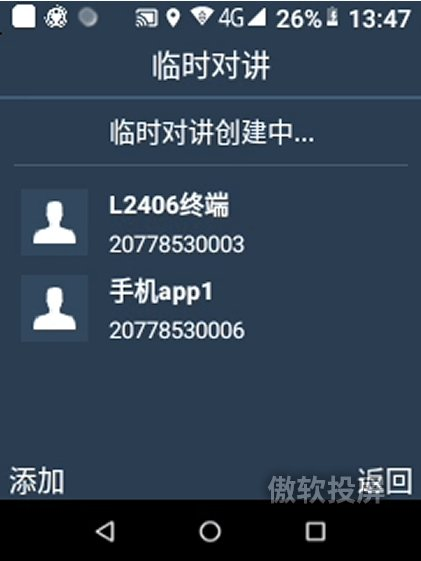
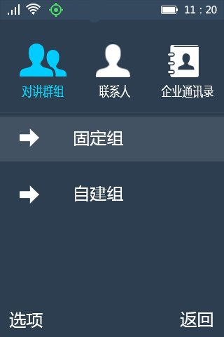
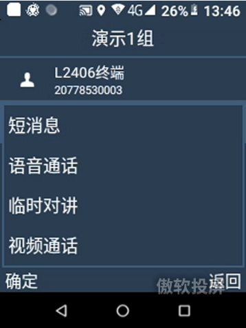
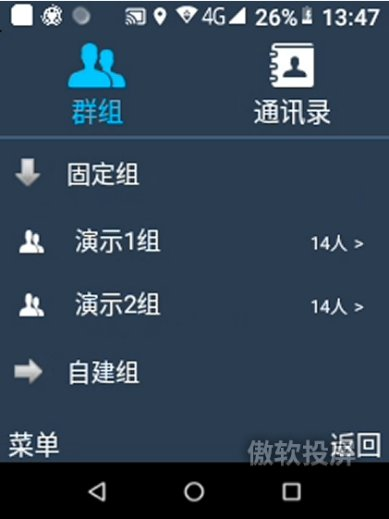
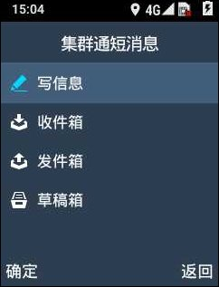
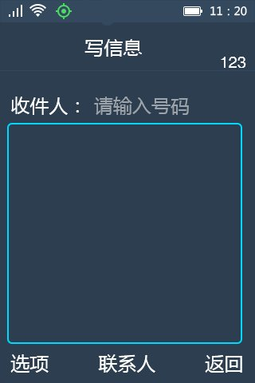
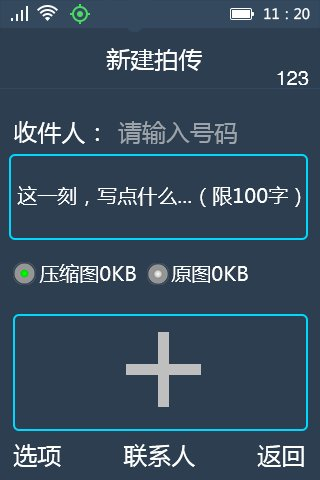

汇特讯-视频对讲机
使用手册

北京七山创智科技有限公司
目录

界面功能介绍

图 1‑1 屏幕主界面
- 功能按键
图标 | 名称 | 功能描述 |
对讲组列表 | 点击可进入对讲组列表，进行切组 | |
| 通讯录 | 点击可进入组通讯录和企业通讯录界面 |
| 随手拍 | 点击可进入拍传界面，可新建拍传或查看历史记录 |
| 短消息 | 点击可进入集群通短消息界面，支持集群通短消息的新建、收发和并查看 |
设置 | 点击可进入集群通设置 |


- 时间日期显示
显示当前时间和日期。
- 当前对讲组/通话状态
显示当前“我”的状态、所在的对讲组和正在进行的通话。
主要的功能有对讲、通话、通讯录、短消息、拍传、视频、文件上传等功能，有些功能需要在调度配置管理程序（管理平台）中设置，才会在终端显示。
对讲
2.1.1对讲抢话
当需要抢话时，按住PTT按键，听到“嘀”表示通话成功，可以对着麦克风用正常声调讲话。请保持麦克风距离嘴唇约3-5cm，使通讯音质达到最佳。放开PTT按键，听到“咚”，表示处于对讲接收状态。
主界面上显示当前所在对讲组，以及我的状态，其中我的状态有：
- 听讲：表示当前有人在讲话，当前用户处于听讲的状态；
- 讲话：表示话机人获得话权，处于讲话状态；
- 排队：当前组中有人在讲话，当前用户处于抢话排队状态；
- 关闭：对讲组为关闭状态；
- 空闲：对讲组内没有人讲话；
- 发起中：发起对讲时，当前用户处于发起中的状态。
2.1.2释放话权
当发言结束，松开PTT键即可释放话权。
2.1.3切换当前对讲组
在主界面下方，显示了当前“我”的状态、所在的对讲组和进在进行的通话，可通过以下方式进入切换对讲组界面：
- 按对讲组列表icon进入“切换对讲组”界面，显示当前所在的固定对讲组，如下图所示。

图 2‑2 切换对讲组
进入上图界面后，点击需要的组可切换当前对讲组。
2.1.4查看成员状态
进入“通讯录> 对讲群组”，进入一个组，不在线的成员显示为灰色，在线的名字为白色。
2.1.5自建对讲组
除了固定对讲组外，还可以自建对讲组，操作如下：
- 从主界面进入“通讯录> 对讲群组”，点击【菜单】；
- 在菜单中选择“新建自建组”，输入组名称，点击【确定】键；
- 在出现的通讯列表中选择要加入自建组的成员，并点击【确定】键。
自建组创建以后，可以”通讯录> 对讲群组> 自建组”当中看到自己创建的自建组，进入自建组，点击【菜单】，可对组员发送短消息、语音通话、临时对讲，还支持一些“组操作”（修改组名、添加成员、删除成员和解散对讲组）。
2.1.6发起临时对讲
可通过以下方式发起临时对讲，
- 从通讯录
- 从主界面进入“通讯录> 对讲群组”，点击【菜单】；
- 在出现的通讯列表中选择要加入临时对讲的成员，并点击【确定】键。
同样，在“对讲群组”、“联系人”或“企业通讯录”中选择某一个成员，按下PTT键，可直接发起临时对讲；也可以选中某成员，点击【选项】，在弹出的菜单中选择“临时对讲”，则可以对群组成员发起临时对讲。

2.2通话呼叫
2.2.1语音通话
呼出
支持集群通通话（VOIP集群通网络通话）。可通过以下方式进行呼叫：
- 从通讯录呼叫
从主界面进入“通讯录”，并进入“对讲群组”或“企业通讯录”中，选中某个组内成员，点击左下角【菜单】，在弹出的菜单中选择“语音通话”。
呼入
图 2‑3 语音呼入界面
当有语音呼入时，在触摸屏界面上点击【接听】或【挂断】。
2.2.2一键告警
🕮 提示： | 在管理平台中未给本终端配置告警号码，此功能无效。 终端无一键告警键，此功能无效。 |
长按机身定义的一键告警键3秒，可开启一键告警功能，可通过设置选择告警类型【视频】或者【语音】。
2.2.3视频通话
🕮 提示： | 只有在管理平台中业务终端参数中配置了“视频”的用户，才具有该功能。 |
视频呼出
发起视频通话，可通过以下方式：
- 从通讯录
- 从主界面进入“通讯录> 对讲群组”，进入“固定组”或“企业通讯录”；
- 选择目标成员，点击【菜单】，在菜单中选择“视频通话”；
视频呼入
图 2‑4 视频呼入界面
当有视频通话呼入时，在触摸屏界面上点击【接听】或【挂断】。
2.3通讯录
在主界面上点击，可进入集群通通讯录界面。
联系人界面由对讲群组、联系人和企业通讯录组成。用户初始登录后会自动获取对讲组和企业通讯录信息。
2.3.1对讲组
对讲组列表分为固定组和自建组两部分。固定组列表中展示用户所在的运营平台创建的对讲组；自建组列表中展示，用户自己创建或是企业内其他用户创建的包含自己的自建组。

图 3‑5 通讯录-对讲群组 界面
在通讯录> 对讲群组当中，点击【菜单】，可支持以下操作：
- 新建自建组
请参见02.1.5自建对讲组。
- 查找联系人
点击【菜单】，从弹出菜单中选择【查找联系人】，输入联系人名称或号码，并支持模糊查找。
- 发起临时对讲
请参见02.1.6发起临时对讲。
还可以进入群组中，选择某个成员，点击【菜单】，弹出菜单中支持以下操作：
- 发送短消息：向对方发送短消息。
- 语音通话：向对方发起语音通话。
- 临时对讲：向对方发起临时对讲。
- 视频通话：向对方发起视频通话。

2.3.2通讯录
企业通讯录界面显示企业名称和该企业下的总人数，同时显示企业下的各部门。用户不能对这些信息进行修改。

图 2‑6 通讯录-企业通讯录界面
在企业通讯录界面，支持以下操作：
- 查找联系人
点击【菜单】，从弹出菜单中选择【查找联系人】，输入联系人名称或号码，可查找某个联系人。
- 刷新
点击【菜单】，从弹出菜单中选择“刷新”，可更新企业通讯录和对讲组信息
进入企业通讯录的组内，点击【菜单】，弹出菜单中支持以下操作：
- 发送短消息：向对方发送短消息。
- 语音通话：向对方发起语音通话。
- 临时对讲：向对方发起临时对讲。
- 视频通话：向对方发起视频通话。
2.4短消息
在主界面上点击，可进入集群通短消息界面。
集群通短消息都包含写信息、收件箱、发件箱、草稿箱4个子文件夹。

图 2‑7 集群通短消息界面
2.4.1写信息
可通过以下几种方式新建短消息：
- 从主界面进入【短消息>写信息】，

图 2‑8 写信息界面
在【收件人】中填写接收方号码，或点击【OK】键进入“联系人”查找联系人；此时还可以：
- 点击【选项>常用语】，可添加常用语（在常用语界面再次点【选项】可添加、修改或删除常用语）；
- 或选择【选项>保存为草稿】，将当前信息保存到草稿箱；
编辑短消息完成后，当光标处于消息内容框中时，点击【发送】；或点击【选项>发送】来发送短消息。
- 在拨号盘输入号码，点击【菜单>短消息】。
- 从主界面进入“通讯录”，选择一个联系人或组成员，点击【菜单>发送消息】。
2.4.2回复短消息
进入【短消息>收件箱】，查看短消息后，点击【回复】键或选择【菜单>回复】，可回复短消息。
另外，在【收件箱】中的消息记录，还可以通过选择【菜单】支持呼叫以及视频通话。
2.4.3转发短消息
在【收件箱】或【发件箱】中选项一条消息，点击【菜单>转发】，可转发此条消息。
2.4.5删除短消息
在【收件箱】、【发件箱】和【草稿箱】中的短消息记录，都可以选择【菜单>删除】来删除该条消息。
2.5拍传
🕮 提示： | 只有在管理平台中业务终端参数中配置了“图片拍传”的用户，才具有该功能。 |
在拍传界面，用户之间可以相互发送（终端自身存储的或现场拍摄的）图片、视频录像，并添加描述；在历史记录的收件箱和发件箱中分别可以查看接收和发送列表。
2.5.1新建拍传
从主界面点击，进入【拍传>新建拍传】，如下图所示：
图 2‑9 新建拍传界面

添加文件
描述
收件人
- 在【收件人】中填写对方号码，或点击【联系人】查找联系人；
如果在管理平台配置了“图片拍传接收号码”，此处会默认显示设置的号码；
- 填写描述文字（100字以内）；
- 选择是否压缩图片或发送原图；
- 点击触摸屏上的【+】或选择【选项>添加文件】，可进行拍照、录像或选择相册中的图片；此时，
- 点击【选项>查看详情】可查看本条拍传；
- 点击【选项>保存草稿】可将拍传保存到草稿箱；
- 点击【选项>发送】，发送拍传。
发送成功后，可进入【发件箱】查看记录，成功发送的拍传消息上有红色“发送完成”字样。
也可进入【拍传>拍照/录像/相册】，先拍摄要发送的图片、录像或选择图片，然后自动进入新建拍传界面。
2.6设置
2.6.1集群通设置
设置项 | 描述或取值 | ||
个人信息 | 显示姓名和账号 | ||
语音增强设置 | 发端降噪功能 | 取值：开（默认值）、关 | |
收端VAD功能 | 取值：开（默认值）、关 | ||
语音通话设置 | AMR速率 | 取值：4.75kbit/s（默认值）、12.2kbit/s | |
PTIME参数 | 取值：20ms、100ms（默认值） | ||
静音检测 | 取值：启用、禁用（默认值） | ||
AEC开关 | 取值：开（默认值）、关 | ||
视频通话设置 | 视频通话设置 | 摄像头 | 取值：前置（默认）、后置 |
摄像头分辨率 | 取值：HVGA（320*480）、VGA（480*640）（默认值）、720P（720*1280） | ||
码率 | 取值：高、中（默认值）、低 | ||
1帧间隔 | 默认值1 | ||
帧率 | 默认值10 f/s 修改后点击【保存】使修改生效。 | ||
色彩校正 | 取值：开、关（默认值） | ||
丢包容忍级别 | 取值：1（默认值）、2、3、4、5 | ||
视频上传设置 | 与“视频通话设置”项目相同，不同之处在于： 摄像头默认值为“后置”。 | ||
对讲来电处理 （各对讲组的优先级提醒设置） | 高优先级 | 取值：提示消息、自动接听（默认值）、自动拒绝 | |
相同优先级 | 取值：提示消息、自动接听、自动拒绝（默认值） | ||
低优先级 | 取值：提示消息、自动接听、自动拒绝（默认值） | ||
自动跳转 | 取值：开（默认值）、关 | ||
来电自动接听 | 语音来电 | 取值：开、关（默认值） | |
视频来电 | 取值：开、关（默认值） | ||
临时对讲来电 | 取值：开、关（默认值）（与管理平台配置无关） | ||
文件上传 | 仅WiFi环境下上传 | 取值：开（默认值）、关 | |
自动上传 | 取值：开、关（默认值） | ||
服务器地址 | 空（默认值） | ||
本地录制设置 | 录像 | 取值：前置、后置（默认值） 取值：HVGA（320*480）、VGA（480*640）（默认值）、720P（720*1280） | |
拍照 | 取值：前置、后置（默认值） | ||
功能键 | 取值：录像（默认值）、录音、拍照 | ||
告警设置 | 取值：视频、语音（默认值） | ||
休眠模式 | 取值：休眠模式一、休眠模式二（默认值）、休眠模式三 | ||
退出 | 退出集群通 | ||